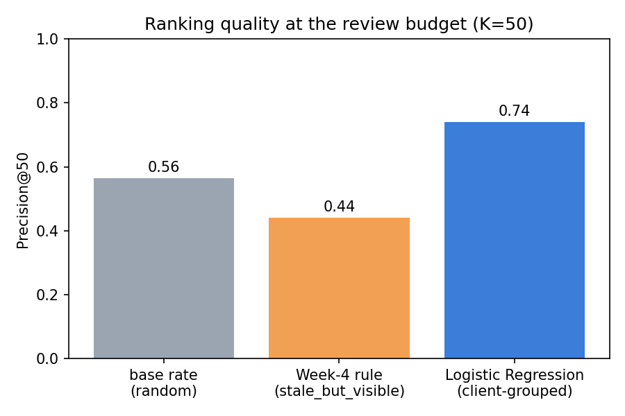
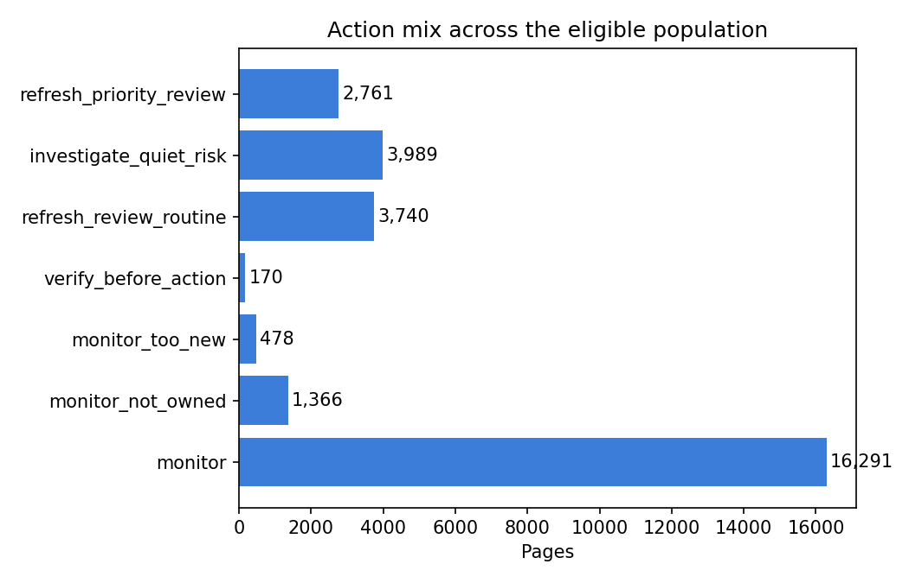

Introduction
A content operation with thousands of live pages cannot manually re-check every one of them every month. Some pages are quietly losing search visibility while nobody is looking; others just look stale and are actually fine. The decision this paper supports is narrow and concrete: out of a large page portfolio, which ones should a human reviewer open first this cycle?
The person acting on the output is a content strategist or editor with a fixed review budget — this paper uses K = 50 pages per cycle throughout, chosen before any model was trained. Getting the order wrong has an asymmetric cost: a false positive (flagging a healthy page) wastes roughly ten to fifteen minutes of a reviewer's time; a false negative (missing a genuinely declining page) lets a real problem run for another full cycle before anyone notices. That asymmetry — a wasted look is cheap, a missed decline is not — shapes every threshold choice below.
FlyRank's product already ships hand-written flags for exactly this purpose: a health score, quick-win tags, needs-attention flags. They are auditable and they work — but they are fixed thresholds on one or two signals at a time, and this project's own signal audit found that the most obvious one, staleness, is a MIXED signal on its own: decline rate rises from freshness tier 0–30 days through 91–180 days, then drops at 181+ days (n=174) — a page ignored for a year is not reliably more at risk than one ignored for three months. That is exactly the gap a model that weighs several signals jointly, rather than one hand-tuned rule, is positioned to close.
Data
Two datasets appear in this project, used for two different purposes — kept explicitly separate so the headline numbers below are never confused with a different slice of data.
The working dataset
content_refresh_anonymized.csv — 30,000 rows, 44 columns, one row per pseudonymized content page, a trailing-90-day snapshot across 32 clients. This is what the baseline, model, validation, and action queue in this paper are built and measured on.
The warehouse rehearsal
FlyRank/internship-warehouse (Hugging Face, gated, instant approval) — a daily fact table at content-day grain, ~78.8M rows / 519,606 items across the full release. A data contract was written and verified against its March 2026 partition specifically: 9,841,378 rows, 331,437 content items, 55 clients, 2026-03-01 to 2026-03-31. This confirms the same grain, field-classification, and leakage discipline holds at production scale — but it did not feed the model below. It is reported separately in Reproducibility so it is never mistaken for the source of the Results section's numbers.
What was excluded, and why
| Field | Why excluded |
|---|---|
| avg_position = 0 | means "no ranking data," not rank zero — replaced with NULL before any averaging |
| impression_tier = "no_data" | no real impression reading — page dropped from the eligible population entirely |
| content_id, client_id | pseudonymous IDs — used only for grouping/splitting, never as model inputs |
| trend_direction, trend_pct | the label's own source — usable as the thing predicted, never as a feature |
| ga4_* before ga4_data_start | zero-filled placeholders in the warehouse table, not real zero-engagement days |
After exclusions, 28,795 of 30,000 pages (96.0%) have real ranking and impression signal — this is the eligible population every metric in this paper is computed against. Nothing in this repository or its outputs contains a client name, domain, URL, page title, or keyword; every identifier is a pseudonymous hash.
Methodology
Unit of analysis: one pseudonymized content page, as it appeared in the trailing-90-day export. Target: is_declining = (trend_direction == "down") — an observed column in the export, not a rule this analysis defined itself. Task shape: a ranking question ("which ones first?"), so the metric was fixed before any training happened: Precision@50, matching the review budget named in the Introduction.
The baseline: a rule a human can read
stale_but_visible flags a page when days_since_last_update ≥ 90 and impressions_90d ≥ 500, scored by raw impressions_90d among flagged pages and zero otherwise. No fitted weights — every flagged page carries a reason a reviewer can check by hand. On the eligible population, this rule flags 6,575 of 28,795 pages (22.8%).
Features and the leakage catch
The final feature set covers trailing-90/30-day engagement and search columns (impressions, clicks, sessions, users, scroll events, AI-traffic share, CTR, average position, content age, days since last update, word/char count, search volume, competition, CPC), missingness flags computed before filling blanks (because missingness follows content_type, not randomness), and one-hot encoded content_type/main_intent. content_id and client_id never enter the feature matrix.
An early pass included impressions_last_30d and impressions_prev_30d. Precision@50 immediately hit a suspicious 1.000. The attack test confirmed why: corr((last − prev) / prev, trend_pct) = 0.99999998 — those two columns are trend_pct's own source columns wearing different names, not predictive features. Both were removed. A second sanity check — injecting trend_pct itself directly into the feature matrix — confirmed the leak-detector is actually sensitive (the score jumped back to 1.000) rather than trusting a single clean pass.
Validation: grouped by client, not by row
Pages from the same client share hidden character — niche, publishing cadence, how aggressively that client was already refreshing before this export was taken. A random row split lets a model partly memorize a client instead of learning something transferable, so validation uses GroupKFold by client_id, 5 folds, across the 31 distinct clients in the eligible slice — every fold tests on clients the model never trained on. A time-based split was not available: the starter export is a single trailing-90-day snapshot, not a daily panel. That is stated here as a real limitation of this data, not a design choice being quietly hidden.
Two methods were trained and ranked by predicted probability, per the project's own method-selection rule (readable method first, stronger method second, complexity has to earn its place): Logistic Regression, then Random Forest. Both are scored against the identical eligible population, split, and K as the baseline above.
Results
| Method | Precision@50 |
|---|---|
| Base rate (random ordering) | 0.564 |
| Week-4 rule (stale_but_visible) | 0.440 |
| Logistic Regression (client-grouped) | 0.720 |
| Random Forest (client-grouped) | 0.520 |

The rule underperforms randomness at this K because it ranks flagged pages by raw impression volume, and the project's own signal audit already flagged staleness as a MIXED predictor of decline — a rule tuned on visibility, not decline shape, has no reason to beat a coin flip once the base rate is already above 50%.
How much of "0.72" is the split?
Holding the model, features, and K fixed and changing only the split: a naive, non-grouped 5-fold split over rows reports Precision@50 = 0.860; the honest, client-grouped split reports 0.720. In the naive split, essentially every client (30.6 of 31, on average) appears on both sides of every fold — part of "0.860" is the model recognizing a client it has already seen, not a transferable decline pattern. The 0.14-point gap is reported here as a result in its own right, not smoothed over: anyone re-quoting this model's precision without naming which split produced it is quoting the inflated number.
What the model leans on, and where it's wrong
Averaged, standardized Logistic Regression coefficients across folds put clicks_last_30d as by far the strongest signal pushing toward "declining" (a recent drop), with sessions_90d and clicks_prev_30d the strongest signals pushing the other way (a healthy longer-run baseline) — a recent dip against a longer baseline, not any single raw count. Of the top 50 ranked pages, 14 are false positives against trend_direction, and 12 of those 14 are pages already labeled "stable" rather than "up" — the model is catching a real short-term click drop on pages whose longer trend hasn't (yet) crossed the export's own boundary into "down." Given the cost model from the Introduction, that is the cheaper kind of mistake: a wasted look, not a missed decline.

Limitations & honest framing
- Cross-sectional, one snapshot. No page here was actually refreshed and re-measured. Nothing in this paper shows that refreshing a flagged page will reverse its decline — that claim would need an actual before/after experiment, which this project does not run.
- Client coverage is narrow. Generalization is demonstrated only across the 31 clients present in this pseudonymized slice. Performance on a new client or vertical is untested until it's measured.
- No forward-in-time test exists yet. The starter export is a single trailing-90-day snapshot, not a daily panel — validation is client-held-out on one period, not a test against a future period. The monitoring plan in Section 6 exists precisely because this gap hasn't been closed.
- The inflated number is the one that travels. 0.860 (naive random split) is easy to misquote without its split named; 0.720 (client-grouped) is the number this paper defends.
- A retrospective check, not a live one. Using
trend_directiononly as a one-time audit of this historical snapshot (never as a live input): roughly 30% of pages placed in refresh_priority_review and 24% in investigate_quiet_risk were already trending up or stable despite being flagged. The queue orders review — it does not replace a human's judgment call on any single page. - The warehouse rehearsal is not this model. The 9.84M-row data-contract exercise (Section 2) used a different, re-derived proxy label and a different grain; it is not directly comparable to the Precision@50 numbers above and does not claim to be a warehouse-trained model.
Ranked recommendations
The rule supplies a reason a human can check; the model supplies the order. The monthly queue combines both, in this priority sequence (first match wins):
- 1 refresh_priority_reviewRule and model agree — the strongest, most auditable case. Start the K=50 queue here. 2,761 pages
- 2 investigate_quiet_riskModel flags elevated decline risk, the rule doesn't — the rule's own blind spot, worth a look precisely because a threshold rule would have missed it. 3,989 pages
- 3 refresh_review_routineRule flags it, model doesn't confirm elevated risk — lower urgency than #1. 3,740 pages
- 4 verify_before_actionA ≥500% swing between the label's own source columns — confirm the numbers before trusting them; may be a tracking or campaign artifact. 170 pages
- 5 monitor_too_new / monitor_not_ownedNo-go, never auto-flagged: too little history to trust a decline read, or syndicated content the team doesn't edit. 478 + 1,366
- 6 monitorNo elevated signal from either the rule or the model this cycle. 16,291 pages
Before acting on any single item
- Does a seasonal or one-off event explain the change, rather than real decay?
- Has search intent for this topic drifted?
- Is the client mid-change on publishing cadence, site structure, or page ownership — a business reason for staleness, not neglect?
- For navigational-intent pages, a low CTR is usually structural (a branded query), not a content problem — don't read ctr_underperforming_for_position the same way here.
Monitoring and fallback policy
Recompute the base rate and Precision@50 for the rule, the model, and the base rate every labeled period. If the model's Precision@50 sits below the frozen rule's for two consecutive periods, a human reverts the live queue to the rule and escalates for a retraining review. This is stated as a proposed policy: the starter export is a single snapshot, so there is no second labeled period yet to actually run this check against.
Reproducibility
Everything above traces back to a committed file in the repository — no number in this paper is asserted without a receipt.
| Artifact | What it holds |
|---|---|
| work/notebooks/w04_baseline_score.ipynb | the rule, its eligible population, and the top-10 human review |
| work/notebooks/w05_model.ipynb | feature build, the leakage catch, Logistic Regression / Random Forest |
| work/notebooks/w06_validation_audit.ipynb | grouped-vs-naive split comparison, the leak-detector sanity check |
| work/notebooks/w07_action_playbook.ipynb | the reason-coded queue, no-go rules, retrospective audit, monitoring plan |
| work/outputs/*.json | every metric above, as committed receipts |
| work/figures/*.png | the two charts embedded in this page |
| work/notebooks/w03_data_contract.ipynb | the 9.84M-row warehouse grain/field verification (Section 2) |
To re-run: clone the repo, pip install -r requirements.txt, then open any work/notebooks/*.ipynb — each has a Colab badge that reads straight from this repository. Random seeds are fixed (random_state=42 on every estimator that exposes one); GroupKFold(n_splits=5) is deterministic given the same client grouping. The warehouse notebooks additionally require a Hugging Face read token (HF_TOKEN, gated dataset, approval is instant) supplied via Colab secrets — never pasted into a cell.